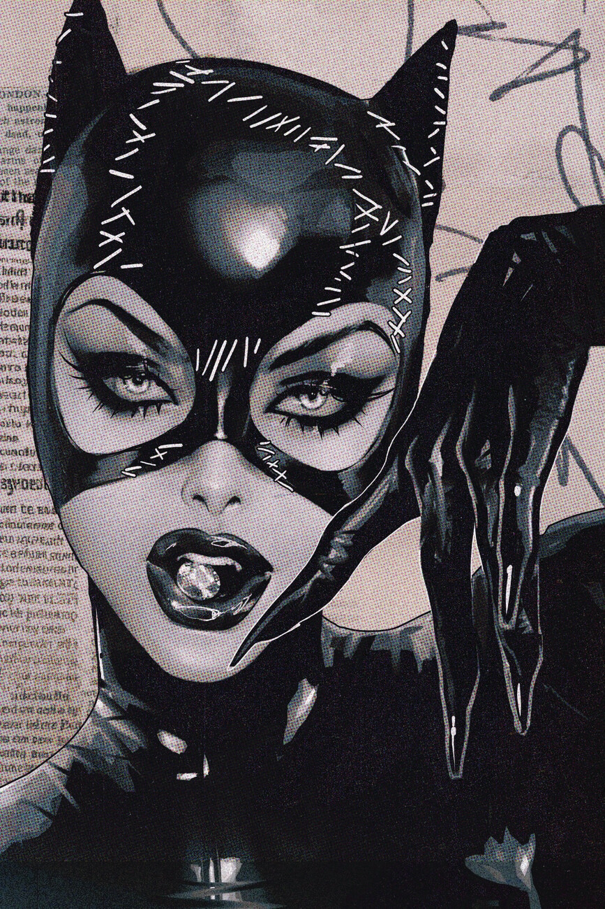
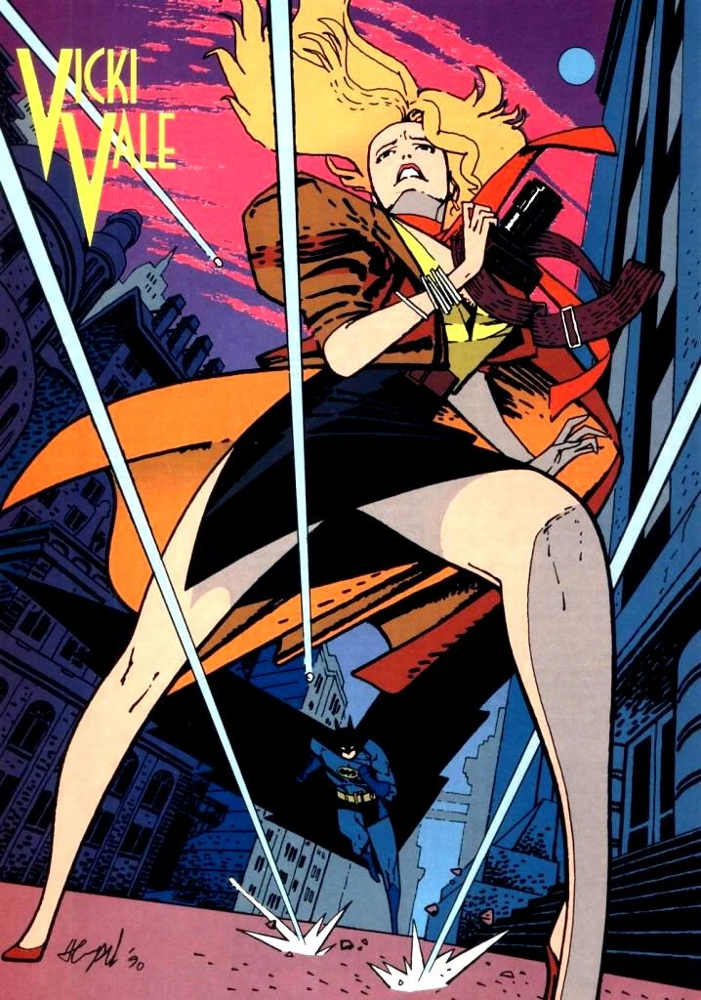

Batmans LoveLife
Catwoman
Selina Kyle
Catwoman remains one of Batman’s most intriguing and beloved characters. Their relationship is a rich narrative element that adds depth to both characters and their stories. Exploring their bond provides insights into the complexities of love and morality in the world of Gotham.
Vicki Vale
Another significant figure in Batman's romantic history is Vicki Vale, a photojournalist who represents a more traditional love interest. Their relationship brings out a different side of Bruce Wayne, one that is more publicly visible and less shadowed by his alter ego. Vicki’s role in his life is often marked by a struggle to balance his dual identities, with her eventual departure typically due to the challenges of living with someone who is both a high-profile billionaire and a secretive vigilante.